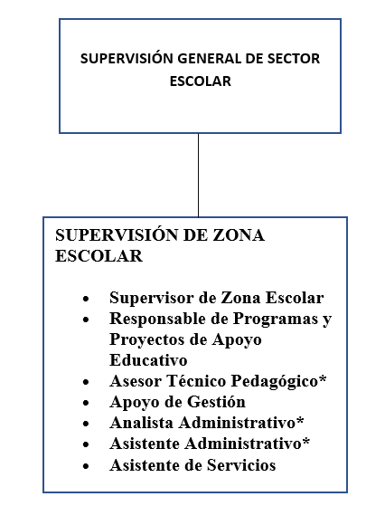

Supervisión General de Sector Escolar: Es la autoridad de mayor rango que coordina y vigila el funcionamiento de varios sectores educativos para asegurar que se cumplan las normas de la Secretaría.
Supervisión de Zona Escolar: Se encarga de la gestión directa de las 9 escuelas de la zona, asegurando la calidad educativa y el vínculo entre las escuelas y las autoridades superiores.
Supervisor de Zona Escolar: Líder encargado de visitar las escuelas, brindar acompañamiento pedagógico a los directivos y supervisar que el servicio educativo sea eficiente.
Responsable de Programas y Proyectos: Coordina la implementación de programas educativos federales o estatales y proyectos de apoyo que beneficien el aprendizaje de los alumnos.
Asesor Técnico Pedagógico (ATP): Docente especializado que brinda asesoría y herramientas a otros maestros para mejorar sus métodos de enseñanza en el aula.
Apoyo de Gestión: Auxilia en la organización de los procesos internos de la supervisión para que los trámites y planes se ejecuten a tiempo.
Analista Administrativo: Se encarga de procesar información, datos de nómina o estadísticas escolares, generalmente contando con clave docente.
Asistente Administrativo: Realiza labores de oficina como el manejo de archivos, recepción de documentos oficiales y atención a directivos, usando claves administrativas.
Asistente de Servicios: Responsable del mantenimiento, limpieza y buen estado físico de las instalaciones de la oficina de supervisión.
En esta Supervisión, todos trabajan juntos para hacer posible una educación de calidad, brindando el acompañamiento y las herramientas necesarias para que cada docente y alumno de nuestra zona alcance su máximo potencial.